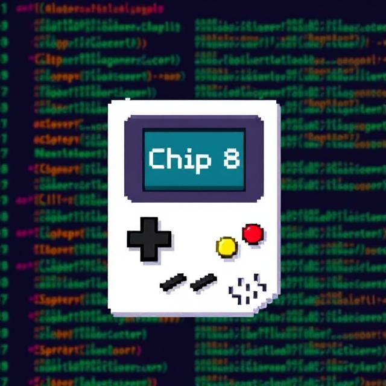

LinkedIn
LinkedIn
 YouTube
YouTube
About Me
I'm an Electrical and Computer Engineering major at Vanderbilt University with concentrations in Embedded Computing, Cyber-Physical Systems, and Microcontrollers. I'm also minoring in Computer Science.
I currently do research involving the effects of radiation to electronic devices for space and defense applications, where I design the PCBs for test ICs, as well as run characterization tests. I'm also involved in a variety of student organizations - most notably the Amateur Radio Club and SyBBURE (a research fellowship program). More details about my research and the student orgs can be found on my resume.
As mentioned previously, I'm interested in the fields of FPGAs, low-level software development, and embedded systems but love pretty much every aspect of ECE. I spend my free time diving into these areas by creating lots of different projects, and tinkering with all kinds of electronics. Check out my projects and Github to see more.
Some other fields that I'm interested in aside from ECE are cybersecurity, game development, and video production/editing.
Please reach out on my LinkedIn for my email address!
Projects

Chip 8 Emulator
C++ based emulator that interprets and runs CHIP-8 programs. Handles opcode decoding, graphics rendering, and memory management

Automated YouTube Video Generator
Python-based tool that scrapes top Reddit posts to automatically generate YouTube Shorts, complete with subtitles, background video, and voiceover
My Recent Activity:
- Loading...